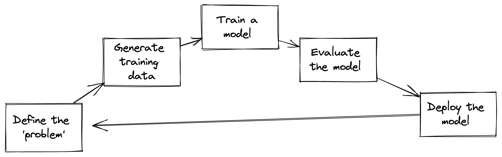

2 Introduction
The growing interest in using Artificial Intelligence/Machine Learning in a GLAM setting is demonstrated by the many initiatives and groups aiming to develop communities and best practices around applying AI/Machine Learning in GLAM settings. These initiatives include; ai4lam and CENEL's AI in Libraries Network Group.
There are also several funded projects which seek to explore this area, including the AEOLIAN Network, Unlocking our Digital Past and the AURA Network.
These more academic projects can produce a range of resources that can be helpful for GLAM institutions wanting to use machine learning. These primarily include publications, code, and, to a lesser extent, datasets. Whilst these projects are essential as part of the development of machine learning within the sector, there are potential limitations to these projects being the sole method of building capacity for machine learning projects within the GLAM community.
- They often have to have some academic focus to get funding, so projects tackling more mundane or ‘business’ problems may not be funded. This might potentially limit the types of machine learning demonstrated by these projects.
- The components of the machine learning process documented through academic publications are often skewed towards particular stages of the overall pipeline, in particular, the development of new models or novel algorithms. These parts of the process can be very important but only make up a part of using machine learning for practical applications.
- Academic projects often have different goals than ‘business as usual’ projects. For academic projects, publishing in well-respected journals remains the primary goal. For BAU projects the outcome is to ‘solve’ a problem. Whilst these can intersect, there can be tensions between the two. For example, an academic publication might be achieved by improving performance on a benchmark dataset at the expense of using a much larger model, whilst the BAU use case might have constraints on what resources can be used for training/inference (a topic we pick up later in this book).
There is also a growing body of materials focused on teaching GLAM staff topics related to machine learning. A review of some of this material has been carried out by the Teaching and Learning working group of the AI4LAM network Darby et al.1
This material includes general introductions to machine learning for GLAM staff van Strien et al.2, practical introductions to using the Python programming language for machine learning 3 and introductions to a specific tool. 4
While this more ‘formal’ teaching material is an essential part of enabling GLAM staff to engage with machine learning, there are limitations to relying only on this material. These materials often need to focus on a particular topic, concept or approach within machine learning, for example, an introduction to Named Entity Recognition. However, learning how to train a machine learning model, or use an existing model, is only one part of a more extensive pipeline for practically making use of machine learning in a GLAM setting.
2.0.1 What’s missing?

A recent review of teaching materials Darby et al.5 for GLAM staff identified that much of the existing material was focused on one stage of the machine learning pipeline, namely the ‘creating and training a model’ part of the process. Whilst this is an important component of applying machine learning, many other stages of the process - particularly when seeking to use machine learning in a ‘practical’ setting - are important.
There has been a growing number of books published in recent years that aim to cover more of the end-to-end pipeline of machine learning products Ameisen6, Huyen7, Lakshmanan, Robinson, and Munn8. Alongside this, there has also been the development of courses like ‘Full Stack Deep Learning’9 and ‘Made with ML’10 which go beyond the model training components of machine learning projects. These resources are very useful but some of the approaches adopted in these settings may not translate to the GLAM sector.
This book aims to partially fill the gap of open documentation about a machine learning project undertaken in a GLAM institution (The British Library). It is not intended as a guide to best practice but instead offers an outline of the approach we took with the hope that anyone wanting to embark on a machine learning project in a GLAM setting can learn from our experiences.
2.1 What's covered
The book covers a few key areas:
- the motivation of the project
- the various stages in the pipeline:
- data collection
- data versioning
- model development
- model evaluation
- tracking results
- deployment
- updating the model
All of these are discussed with a particular focus on how they fit into existing workflows and how they can be done pragmatically.
2.2 What isn't covered
This isn't a guide on how to do machine learning itself. Although some of the sections touch upon some of these considerations, this book won't explain everything thoroughly. If you want a more conceptual introduction to machine learning, we recommend https://carpentries-incubator.github.io/machine-learning-librarians-archivists. For a hands-on introduction, we recommended https://course.fast.ai/.
2.3 Who is this for?
We hope that this book will be useful for other GLAM institutions wanting to embark on machine learning projects. In particular, we are keen to address ‘business as usual’ use cases of machine learning in GLAM institutions as we believe there is massive scope for using machine learning methods across a range of ‘mundane’ GLAM activities.
2.4 Practical machine learning projects?
A report has suggested that 85% of AI projects “ultimately fail to deliver on their intended promises to business”11. This stat might be a little dubious, but there is some truth to the claim that machine learning projects can be challenging. By a “machine learning project,” we mean a project that intends to use machine learning to solve a problem. Part of this process could include creating new machine learning models, but it could also rely on existing models.
We use the term “practical” here to try and distinguish this type of project slightly from other projects which may involve using machine learning in a GLAM setting but are more focused on research. The outputs of these projects may need to integrate less tightly into existing business workflows and processes. This isn’t to say that these kinds of projects won’t have their own challenges, but they will likely be different. ‘Practical’ machine learning projects could include workflows and processes that end users don’t see and are likely to be the kinds of projects that may struggle to get external funding.